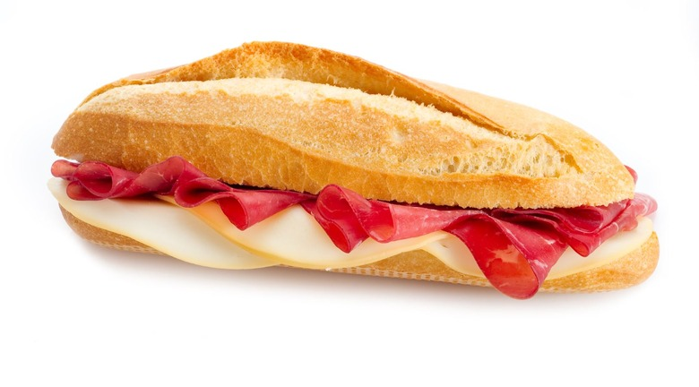

Sandwhich

A Basic Sandhwhich to curve your hunger in a pinch.
This is a basic sandwhich, and the ingredients can be interchanged, and can be made with whatever is available. This is just my preference if I have the ingredients.
- Salami(I prefer Hot Genoa)
- Turkey Breast
- Any other meats you would like, however overdoing it may make the sandwhich too thick to eat comfortably.
- Bread, or any form of bun.
- Cheese, I prefer marble cheddar but if you have another preference that works too.
- Some people prefer lettuce, tomatoe, and sauce. Add these if desired, I for one am not a fan.
- Place the bun so the inside on both ends is facing upward. Cut if needed.
- Lay the ingredients down so that they follow a 1-after-the-other system. A good example is cheese Salami Turkey Cheese Salami Turkey.
- Place the second bun on top, and enjoy!